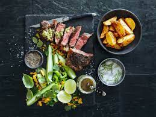

Pan-Seared Steak Au Poivre

Description
Steak au poivre or pepper steak is a French dish that consists of a steak, traditionally a filet mignon, coated with coarsely cracked peppercorns. The peppercorns form a crust on the steak when cooked and provide a pungent counterpoint to the beef.
Ingredients
- Beef
- Red Wine
- Beef Stock
- Garlic
- Pearl Onions
- Mushrooms
- Lardons
- Butter
- Carrots
Steps
- Preheat oven to 350°F (175°C).
- Heat the oil in a large dutch oven or heavy based pot. Sauté the bacon over medium heat for about 3 minutes, until crisp and browned. Transfer with a slotted spoon to a large dish and set aside.
- Pat dry beef with paper towel; sear in batches in the hot oil/bacon fat until browned on all sides. Remove to the dish with the bacon.